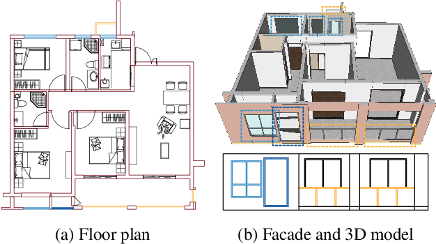
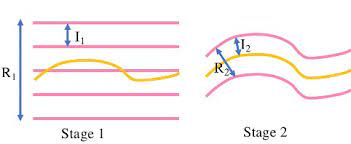
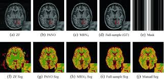

About Me
I am a Ph.D. student in Electrical Engineering at The University of Texas at Austin advised by Prof. Atlas Wang at VITA group. Previously, I was a senior algorithm engineer at Alibaba Cloud worked with Prof. Ping Tan and Prof. Siyu Zhu. I am a winner of Qualcomm Innovation Fellowship 2022.
Recent News
- One paper for 3DV 2024, three papers for CVPR 2024 (one as highlight), three papers for ECCV 2024, one paper for IROS 2024, have been accepted.
- One paper for ASP-DAC 2023, one for CVPR 2023 (as highlight), and two for ICCV 2023 have been accepted.
- We won the Qualcomm Innovation Fellowship (North America) 2022 (QIF 2022).
- We won 3rd place in the University Demo Best Demonstration at the 59th Design Automation Conference (DAC 2022).
- Two papers for CVPR 2022 (one as oral), one for ICML 2022, three for ECCV 2022, and two for NeurIPS 2022 have been accepted.
- One paper for ICCV 2021, one for 3DV 2021 have been accepted.
- One paper for CVPR 2020 (as oral), one for TIP have been accepted.
Selected Publications
Full publication list at Google
Scholar
* denotes equal contribution.




Experience
-
Meta, Redmond:Research Intern (year of 2023).
-
Google, San Francisco:Research Intern (year of 2022).
-
Alibaba Group, Hangzhou:Senior Algorithm Engineer(2019 - 2021).
Services
-
Journal Reviewers:TPAMI, TIP, IJCV, Neurocomputing.
-
Conference Reviewers:NeurIPS 22/23, ICML 22/23, CVPR 22/23, ICCV 21/23, AAAI 21, ICME 2019.